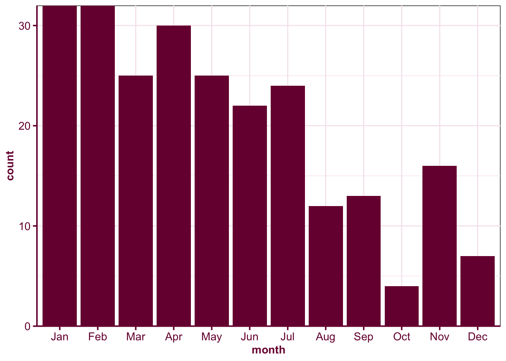

| No | Name | Pos | Shoots | Height | Weight | Birthdate | Hometown |
|---|---|---|---|---|---|---|---|
| 9 | Brennan Bosch | C | R | 5.666667 | 173 | 1988-02-14 | Martensville, SK |
| 11 | Scott Wasden | C | R | 6.083333 | 188 | 1988-01-04 | Westbank, BC |
| 12 | Colton Grant | LW | L | 5.750000 | 177 | 1989-03-20 | Standard, AB |
| 14 | Darren Helm | LW | L | 6.000000 | 182 | 1987-01-21 | St. Andrews, MB |
| 15 | Derek Dorsett | RW | L | 5.916667 | 178 | 1986-12-20 | Kindersley, SK |
| 16 | Daine Todd | C | R | 5.833333 | 173 | 1987-01-10 | Red Deer, AB |
| 17 | Tyler Swystun | RW | R | 5.916667 | 185 | 1988-01-15 | Cochrane, AB |
| 19 | Matt Lowry | C | R | 6.000000 | 186 | 1988-03-02 | Neepawa, MB |
| 20 | Kevin Undershute | LW | L | 6.000000 | 178 | 1987-04-12 | Medicine Hat, AB |
| 21 | Jerrid Sauer | RW | R | 5.833333 | 196 | 1987-09-12 | Medicine Hat, AB |
| 22 | Tyler Ennis | C | L | 5.750000 | 160 | 1989-10-06 | Edmonton, AB |
| 23 | Jordan Hickmott | C | R | 6.000000 | 183 | 1990-04-11 | Mission, BC |
| 25 | Jakub Rumpel | RW | R | 5.666667 | 166 | 1987-01-27 | Hrnciarovce, SLO |
| 28 | Bretton Cameron | C | R | 5.916667 | 168 | 1989-01-26 | Didsbury, AB |
| 36 | Chris Stevens | LW | L | 5.833333 | 197 | 1986-08-20 | Dawson Creek, BC |
| 3 | Gord Baldwin | D | L | 6.416667 | 205 | 1987-03-01 | Winnipeg, MB |
| 4 | David Schlemko | D | L | 6.083333 | 195 | 1987-05-07 | Edmonton, AB |
| 5 | Trevor Glass | D | L | 6.000000 | 190 | 1988-01-22 | Cochrane, AB |
| 10 | Kris Russell | D | L | 5.833333 | 177 | 1987-05-02 | Caroline, AB |
| 18 | Michael Sauer | D | R | 6.250000 | 205 | 1987-08-07 | Sartell, MN |
| 24 | Mark Isherwood | D | R | 6.000000 | 183 | 1989-01-31 | Abbotsford, BC |
| 27 | Shayne Brown | D | L | 6.083333 | 198 | 1989-02-20 | Stony Plain, AB |
| 29 | Jordan Bendfeld | D | R | 6.250000 | 230 | 1988-02-09 | Leduc, AB |
| 31 | Ryan Holfeld | G | L | 5.916667 | 166 | 1989-06-29 | LeRoy, SK |
| 33 | Matt Keetley | G | R | 6.166667 | 189 | 1986-04-27 | Medicine Hat, AB |
Maximum potential
life
outlier
It’s a tragedy when those who have talent don’t get to fully express it because of the environment.
When I read books, I almost exclusively read non-fiction books only. One of the books that left a strong impression on me is “Outliers” by the journalist, Malcolm Gladwell, that I read back in 2016. The name of the book sound awfully statistical but it’s definitely not like the statistic journal articles I read.
Ice hockey talent
In the beginning of the book, Gladwell presents a hockey player roster shown in Table @ref(tab:hat-tigers). He asks to take a closer look at this roster. Do you notice anything strange about the list?
Did you notice anything unusual from the above table? If you didn’t that’s okay. Let’s instead look at Figure @ref(fig:mht-2007-bar) which shows the frequency of the birth month that the players are born. Now do you notice something?
mht2007 %>%
mutate(month = factor(month(Birthdate), levels = 1:12, labels = month.abb)) %>%
ggplot(aes(month)) +
geom_bar(fill = "#79003e") +
scale_x_discrete(limits = month.abb) +
scale_y_continuous(expand = c(0, 0))
Without doing any statistical tests, you probably can see from Figure @ref(fig:mht-2007-bar) that there is an over-representation of players born in January. Gladwell postulates that this is a result of Canada’s eligibility cut-off for age-class hockey being January 1st. To explain further, coaches in Canada start training selected children at the age of 9 or 10. In preadolescence, a few months of gap can show a big difference in physical maturity, so for children born in the same year, the coaches tend to select the ones born earlier in the year. These selected children then get many more practice than the children who are not selected, and what started as a frivolous difference due to the month you were born turns into a big difference in talent in future.
I wanted to validate the claim about the birth month so I searched and scraped the player data at Medicine Hot Tiger from https://tigershockey.com/roster/ using RSelenium and rvest packages. The resulting data is stored in the object roster which include the player information for the following games:
roster %>%
pull(WHL) %>%
unique() [1] "2021 - 22 Regular Season" "2021 Pre Season"
[3] "2020 - 21 Regular Season" "2019 - 20 Regular Season"
[5] "2019 Pre Season" "2019 WHL Playoffs"
[7] "2018 - 19 Regular Season" "2018 Pre Season"
[9] "2018 WHL Playoffs" "2017 - 18 Regular Season"
[11] "2017 Pre Season" "2017 WHL Playoffs"
[13] "2016 - 17 Regular Season" "2016 Pre Season"
[15] "16 Tie Break" "2015-16 Regular Season"
[17] "2015 Preseason" "2015 WHL Playoffs"
[19] "2014-15 Regular Season" "2014 Preseason"
[21] "2014 WHL Playoffs" "2013-14 Regular Season"
[23] "2013 WHL Preseason" "2013 WHL Playoffs"
[25] "2012-13 Regular Season" "2012 WHL Preseason"
[27] "2012 WHL Playoffs" "2011-12 Regular Season"
[29] "2011 WHL Preseason" "2011 WHL Playoffs"
[31] "2010-11 Regular Season" "2010 WHL Playoffs"
[33] "2009-10 Regular Season" "2009 WHL Playoffs"
[35] "2008-09 Regular Season" "2008 WHL Playoffs"
[37] "2007-08 Regular Season" "2007 WHL Playoffs"
[39] "2006-07 WHL Season" "2006 WHL Playoffs"
[41] "2005-06 WHL Season" "2005 WHL Playoffs"
[43] "2004-05 WHL Season" "2004 WHL Playoffs"
[45] "2003-2004 WHL Season" "2003 WHL Playoffs"
[47] "2002-03 WHL Season" "2001-2002 WHL Season"
[49] "2000-2001 WHL Season" "1999-2000 WHL Season"
[51] "1998-99 WHL Season" "1997-98 WHL Season"
[53] "1997 WHL Playoffs" "1996-97 WHL Season"
[55] "1996 WHL Playoffs" After removing duplicate records of the players that appear across multiple games, I plot the frequency of the birth month of the rostered Medicine Hat Tigers hockey players from 1996 to 2021 in Figure @ref(fig:roster-bar). The frequency of players born in January are not strikingly over-represented with a larger sample size but it is noticeable that there are more players born in the first half of the year than second half of the year.
roster_unique <- roster %>%
mutate(month = factor(month(DOB), levels = 1:12, labels = month.abb)) %>%
distinct(Player, .keep_all = TRUE)
ggplot(roster_unique, aes(month)) +
geom_bar(fill = "#79003e") +
scale_x_discrete(limits = month.abb) +
scale_y_continuous(expand = c(0, 0))Warning: Removed 7 rows containing non-finite values (stat_count).
If you are keen, you can do some statistical tests to confirm this assuming equal probability of a person being born in the first or second half of the year.
birth_count <- roster_unique %>%
mutate(first_half = month(DOB) < 7) %>%
group_by(first_half) %>%
count()
birth_count# A tibble: 3 × 2
# Groups: first_half [3]
first_half n
<lgl> <int>
1 FALSE 76
2 TRUE 166
3 NA 7chisq.test(birth_count$n[1:2], p = c(0.5, 0.5))
Chi-squared test for given probabilities
data: birth_count$n[1:2]
X-squared = 33.471, df = 1, p-value = 7.233e-09Changing the environment for your growth
You can extrapolate the ice hockey birth month scenario to other situations and Gladwell presents more examples of super successful (“outlier”) men like Bill Gates, Eric Schmidt, Steve Jobs and so on, of how essential they were in the right place at the right time. Sadly, Gladwell didn’t take the opportunity to discuss about “women outliers” or highlight an example about success based on sex, which very much like birth month is a random assignment beyond an individual’s control, but can make a difference in one’s career.
Gladwell’s writing cemented the idea within me of the importance of the environment particularly when you are still young. E.g. if you are busy trying to find a safe place for you and your family because of the Ukraine-Russia war, you’ll have little opportunity to do anything else no matter how great of a talent you have.
Those who are “successful” tend to be the ones who had the environment working in their favour earlier (if not most of the time) in their career. This is not to say they don’t have talent or didn’t work hard, but the tragedy in all this is that those who have talent but didn’t have the environment to achieve their maximum potential. I can see the traces of my thought on twitter about changing the environment if it’s not working for you creeping up every now and then. (Changing environments has costs though so I realise my advice doesn’t work for everyone.)
Yes this happens a lot. If you an ECR, it’s best to get out of that environment. You are young and it’s the best time to GROW. Surround yourself with people who are better in the skills you care about. If they are not in your workplace, go outside of workplace. Meetup, online
— Emi Tanaka (田中愛美) 💉💉💉 (@statsgen) March 7, 2019
If you are the solo RSE or you don’t have anyone to talk deeply about the software engineering aspects, I don’t know if there will be motivation to stay in that kind of environment when you have other choices. (2/2)
— Emi Tanaka (田中愛美) 💉💉💉 (@statsgen) November 17, 2021
Above predicates on the goal of personal growth, but “success” ultimately comes in many forms. Personally, I feel frustrated when I feel that the environment gets in my way of my personal growth and this tends to drive me to change the environment. There’s a limit to what you can change though, and there’s a part of me that knows that I’m driving myself into a wall getting frustrated at every turn and I’ve got to chill. (I’m sorry if you’re ever on the receiving end of my frustration - but hey maybe you deserve it!… I kid :P)
Changing the environment for others’ growth
There’s been a few times in my life where the upper management was quite bad that it was causing havoc for those under the management and there is widespread discontent. Every time this happens, I always think about how I don’t want to be like that upper management, but I equally fear that I am going to be, perhaps unknowingly, like that when I’m in the same position. So I occasionally remind myself that I shouldn’t fault people, when you don’t know what other things are driving the behaviour or decision. But I’m no saint, so I still have a long way to go though to be that understanding and I might poke fun of the situation in a passive-aggressive drawing 🎨
Fun to draw again 💃 pic.twitter.com/3uHQLi8biA
— Emi Tanaka (田中愛美) 💉💉💉 (@statsgen) February 18, 2019
Branding and management gone wrong. "Precision Pen" pic.twitter.com/SVd6uyxrSr
— Emi Tanaka (田中愛美) 💉💉💉 (@statsgen) March 17, 2019